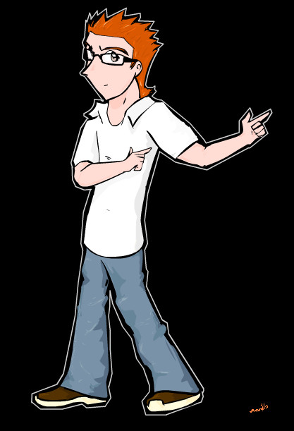

I wrote this during my highschool years and it's the only one I finished. It was a complete notebook, filled with badly paneled comic drawings. It started with a question: what if you went to a magical world, but someone you knew got there first?
Escribí este comic cuando estaba en la prepa y es el único proyecto entre esta lista que sí terminé. Era un cuaderno completo, relleno con mis páneles comprimidos y mal hechos, se lo regalé a una amiga que aprecio mucho así que yo solo tengo una copia, me tomó como 2 años. La idea empezó con una pregunta: ¿Qué pasaría si fueras a un mundo mágico pero alguien que conoces ya fue primero?

River was the popular guy in high school, fashionable and self-absorbed.
His girlfriend, Jhoanne, had just broken up with him after 2 years of
relationship when he and his best friends are randomly sent to an alternate world.
In this alternate world there is a war going on, against the evil leader Silhouette
and her empire. River and his friends join the resistance to fight against her.
River era el chico popular de la prepa, vanidoso y absorto en sí mismo.
Su novia, Jhoanne, acaba de cortar con él después de dos años cuando él y sus
amigos son enviados randommente a un mundo alterno.
En este mundo alterno hay una guerra en contra de la malvada líder Silhouette y
su imperio. River y sus amigos se unen al imperio a pelear contra ella.
Stuff happens (it was a messy story, I'm not much of a writer) and finally
River meets evil Silhouette, who ends up being his ex-girlfriend, Jhoanne.
In the course of their relationship, River got more and more involved in being
popular that he forgot about his girlfriend, who he plainly ignored or sometimes
was even mean to her without noticing. Jhoanne somehow discovered this
alternate world, and she traveled there to feel better, as a refuge from her
toxic relationship. She little by little built her empire, and eventually,
got the courage to break up with River.
Pasan cosas (era un desmadre, no soy escritora) y finalmente River llega
con la malvada Silhouette y resulta ser su ex-novia Jhoanne todo este tiempo.
Resulta que durante su relación River se empezó a preocupar tanto por
ser popular que terminaba ignorándola o incluso siendo grosero con ella.
Jhoanne de alguna manera descubrió este mundo alterno y viajaba a él para
sentirse mejor, como refugio de su relación tóxica. Poco a poco fue
construyendo su imperio hasta que eventualmente tuvo el valor de cortar
con él.